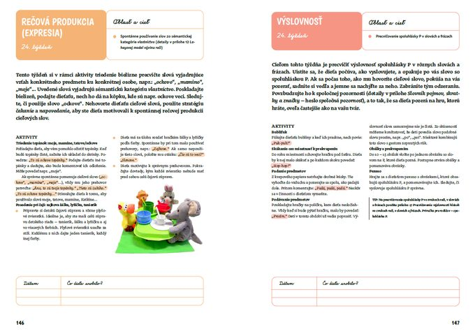
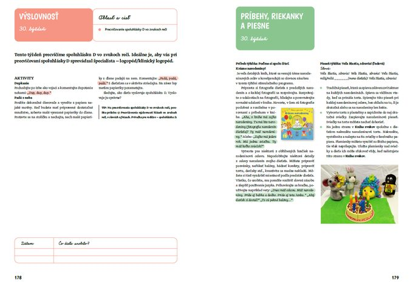
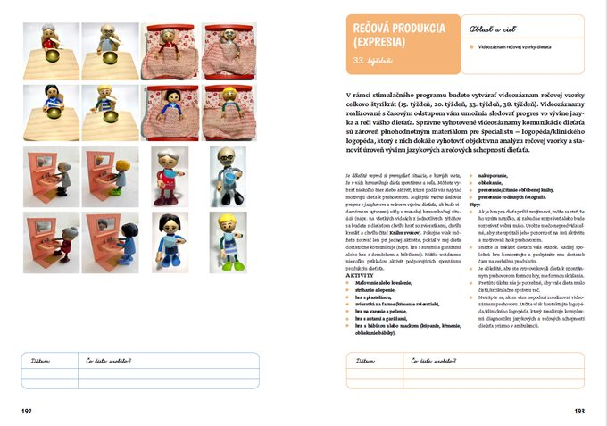
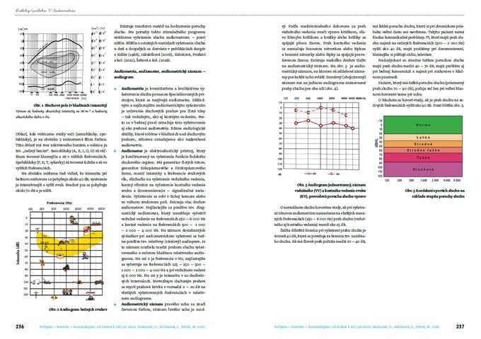
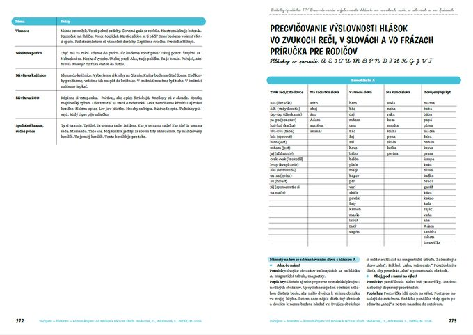
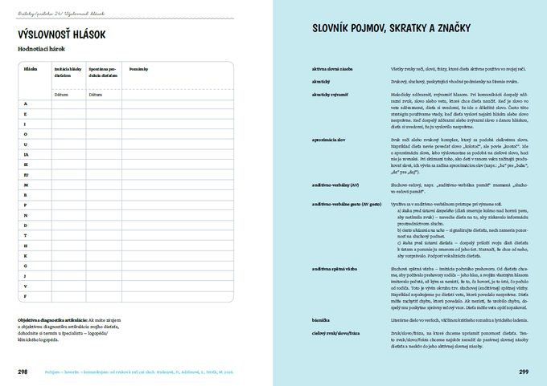
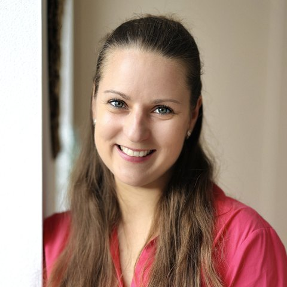
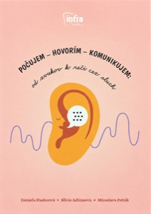

Ukážky strán
Nahliadnite do knihy
Formát A4 dáva priestor na prehľadné rozloženie, farebné označenie oblastí a miesto na vlastné poznámky.














O knihe
Kniha vznikla pre rodičov detí s ťažkou až veľmi ťažkou poruchou sluchu. Dáva im jasnú štruktúru: čo robiť v ktorom týždni a ako rozvíjať hovorenú reč cez sluch pri hre, knižkách, riekankách a piesňach počas bežného dňa.
Program počíta s úzkou spoluprácou rodiny so surdopédom, logopédom alebo klinickým logopédom.
40týždňov, každý je samostatná kapitola
5oblastí rozvoja v každom týždni
323strán vo formáte A4
12–24mesiacov, vek dieťaťa, pre ktorý je program určený
Od prvých zvukov k reči. Poradie týždňov kopíruje vývin sluchových a jazykovo-rečových schopností slovensky hovoriacich počujúcich detí.
Ako je kniha postavená
Každý týždeň má päť farebne odlíšených častí. Každá má vopred určené ciele a k nim zábavné úlohy a hrové aktivity, ktoré sa dajú zaradiť do bežného dňa.
Počas programu si s dieťaťom vytvoríte vlastný zážitkový zošit. Zapisujete doň zvuky, riekanky a zážitky dieťaťa.
Slovenské piesne, riekanky, básničky a tipy na detské knižky, ktoré podporujú to, čo sa dieťa práve učí.
Ukážka z knihy · 2. týždeň, s. 22–23
Oblasť a cieľ
Zvuky dennej rutiny: ísť spať je „haji-haji“, papať je „ham-ham“ alebo „mňam-mňam“.
Oblasť a cieľ
Dlhý zvuk „ááá“ pri lietadle, krátky „š-š-š“ pri vláčiku.
| Dátum | Čo dieťa urobilo? |
|---|---|
Ukážky strán
Formát A4 dáva priestor na prehľadné rozloženie, farebné označenie oblastí a miesto na vlastné poznámky.






Kto za programom stojí
Tri klinické logopedičky z centier kochleárnej implantácie na Slovensku na základe dlhoročných skúseností s prácou s deťmi s poruchami sluchu pripravili stimulačný program Počujem – hovorím – komunikujem: od zvukov k reči cez sluch.


Odborná podpora
Publikáciu odporúča Sekcia klinickej logopédie Slovenskej spoločnosti pre otorinolaryngológiu a chirurgiu hlavy a krku SLS.
Vydanie podporila SSO – Slovenská spoločnosť pre otorinolaryngológiu a chirurgiu hlavy a krku SLS. Vyjadrenie podpory podpísala MUDr. Katarína Obtulovičová, PhD., predsedníčka SSO.
Autorský tím ďakuje občianskemu združeniu ENT Studio za podporu pri vydaní knihy.
„Mnohí ľudia sa napriek ťažkej poruche sluchu naučili rozprávať. Hovorené slovo im otvára cestu k vysnívanému povolaniu. Mnohí z nich sú lekári, advokáti, architekti, inžinieri, psychológovia a vysokokvalifikovaní úradníci.“
 Susann Schmid-Giovanniniauditívno-verbálna terapeutka, Švajčiarsko · citované na zadnej strane knihy
Susann Schmid-Giovanniniauditívno-verbálna terapeutka, Švajčiarsko · citované na zadnej strane knihyPred kúpou
Pre deti vo veku 12 až 24 mesiacov, ktoré používajú kochleárny implantát alebo načúvací prístroj.
Je napísaná pre rodičov a vedie ich krok za krokom. Program zároveň počíta s úzkou spoluprácou rodiny so surdopédom, logopédom alebo klinickým logopédom.
Áno! Pri tvorbe stimulačného programu sme vychádzali z prác odborníkov, ktorí sa venujú vývinu jazyka u slovensky hovoriacich detí. Uvedený materiál teda kopíruje vývin sluchových a jazykových schopností počujúcich detí a inšpirácie v ňom nájdu aj rodičia, ktorí chcú podporiť jazykový vývin svojich počujúcich detí.
Štyridsať týždňov. Každý týždeň je v knihe samostatná kapitola.
Aktivity využívajú bežné hračky a situácie doma. Na Knihu zvukov si pripravte zošit s krúžkovou väzbou.

Počujem – hovorím – komunikujem
od zvukov k reči cez sluch